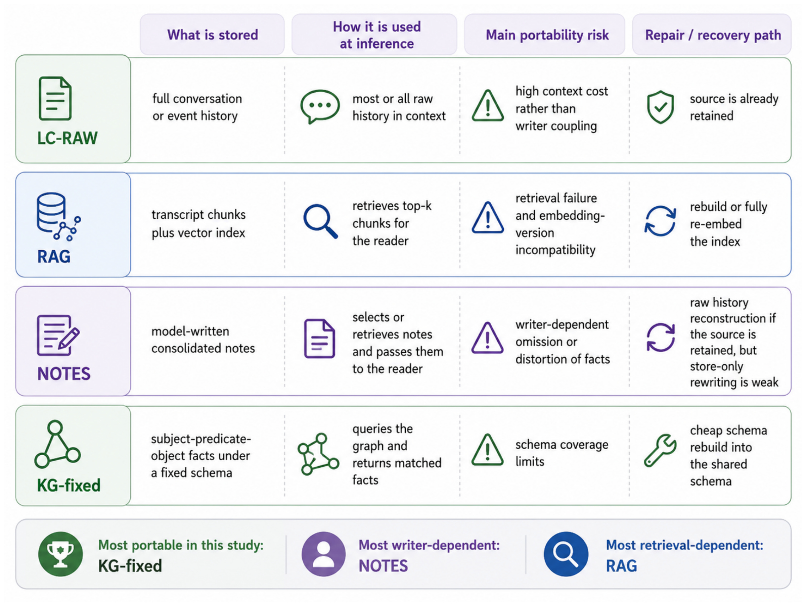
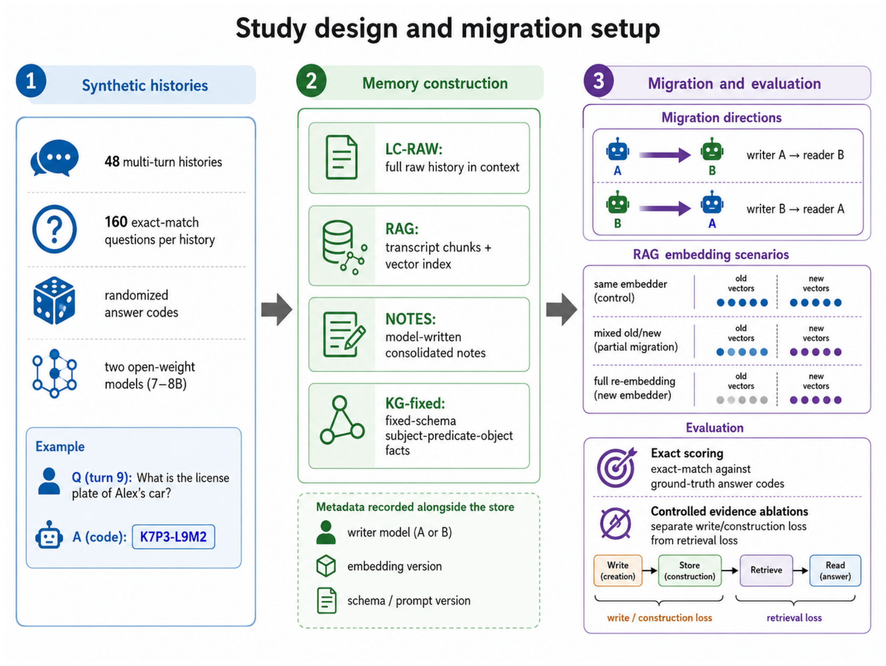
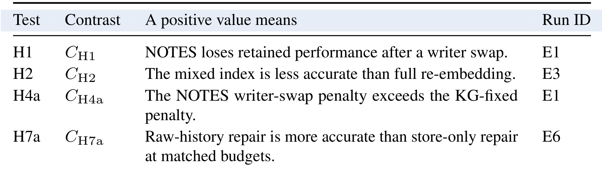
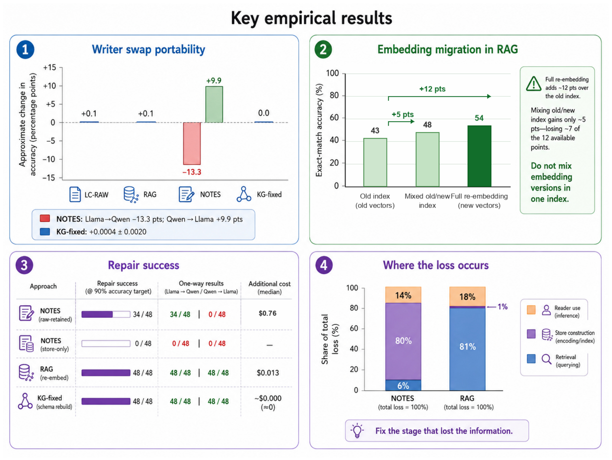
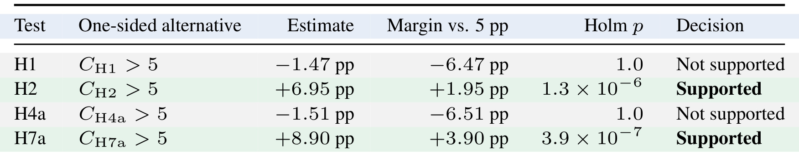
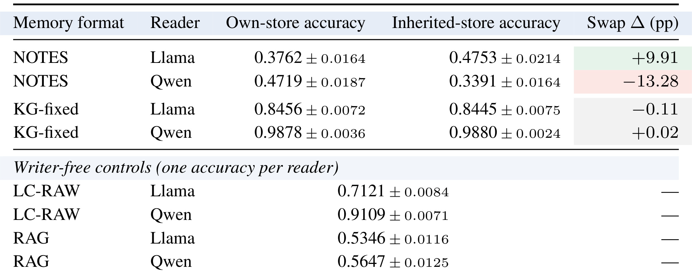
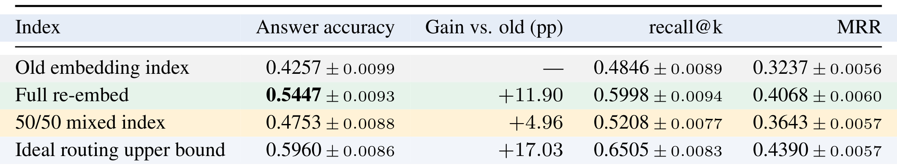
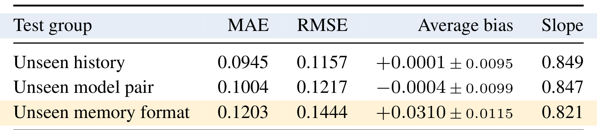
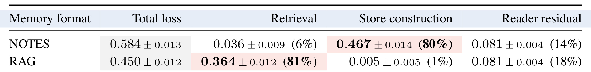
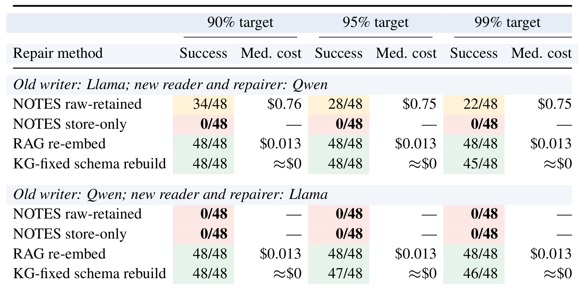

Memory Portability：模型换代后，旧记忆还能被正确使用吗？
论文：Does Your Agent’s Memory Survive a Model Upgrade? A Controlled Study of Memory Portability。作者：Ankit Goyal、Jaideep Ray；PDF 首页仅列姓名与邮箱，未明确署机构，因此机构记为未署机构。首版提交于 2026-09-04（UTC）；精读核验于 2026-09-07，依据 18 页原文及附录。论文入口：arXiv:2609.05339。文末称代码、历史、存储、签名计划和运行记录可应请求提供，本轮未核验到公开独立代码仓库；本文实验数值均为作者报告，并非本地复现。
1. 背景和问题
Agent 即使保留同一份记忆库，模型升级后仍可能遗忘：新模型会不同地解释旧笔记，混合嵌入版本可能破坏检索，失去原始证据还会让修复失败。
这句话压缩翻译自摘要提出的问题。它直接挑战一个容易被忽略的系统假设：只要外部数据库还在，Agent 的历史经验就还在。实际系统中，数据库存活只保证字节没有消失；这些字节能否被下一代模型找回、读懂并用于当前问题，还取决于写入者的取舍、表示方式、向量索引和读取协议。一个编码助手可能记得某个项目“有特殊部署约定”，却已经在摘要时丢掉约定对应的精确参数；一个私人助理可能保存了旧偏好，却在多次更正后没有留下时间和来源。新模型即使具备更强推理能力，也未必能从缺失的证据中恢复正确答案。
论文把“记忆能力”进一步分成两个时间尺度。第一种是当下的记忆使用：给定固定模型、固定存储和固定检索链，系统能否回答关于过去的问题。第二种是跨版本的记忆可移植性：旧模型参与构造的记忆，交给新模型后能保留多少可用信息，以及退化发生后能否用合理成本修复。多数日常评测集中在第一种尺度，容易把新模型在新建记忆上的表现，当成它继承历史资产的表现。作者要求把“新读者读自己写的记忆”和“新读者读旧写者留下的记忆”放在一起比较，使模型本身的能力变化与记忆迁移损失分开。
这种比较不能直接拿升级前后的总准确率相减。假设旧模型较弱、新模型较强，即使旧记忆严重缺项，新模型仍可能在少数题上靠更好阅读取得更高总分，掩盖迁移损害。反过来，如果新读者本身比较弱，总分下降也未必是格式不兼容。保持同一读者，只替换记忆写者，才更接近“这些历史存储对新读者是否仍然合适”的问题。进一步，方向不能合并理解：甲写乙读与乙写甲读涉及不同的证据保留和阅读能力，一边改善、一边下降时，平均值可以非常接近零。
论文选择四类具有不同信息保真边界的记忆。完整历史保留所有事件，代价是每次阅读都要处理大量上下文；检索增强把历史切成块，减少读入量，但可能漏取正确片段；自然语言笔记把经验压缩成较短的表达，写者因此决定哪些事实值得留下；固定模式知识图谱将事件映射为约束字段和关系，减少自由表述，却也限制了可表达的信息类型。这不是同一条压缩率曲线上的四个点，因为它们使用的访问方式、存储容量和归纳偏置不同。作者将它们看作工程设计的理想化版本，并未声称复刻任一商业记忆产品。
为避免预训练知识掩盖记忆缺失，作者没有直接采样自然聊天记录，而是生成含随机实体和值编码的合成历史。答案例如一串随机代号，不能靠常识补全；每个问题有确定答案，也不需要另一台大模型当裁判。这样的设计适合追问“某条证据究竟在哪一步丢了”，代价是弱化了真实对话中的含混表达、主观偏好和开放式总结。研究的价值主要在于隔离机制和建立迁移评测口径，而非用一组数字给全部 Agent 记忆方案排最终名次。
此外，作者将恢复能力视为记忆设计的一部分。保存摘要后删掉原文，短期看可能节约空间，但会关闭未来重建证据的路径；保存原文也不等于一定能修复，因为新模型可能在输出预算耗尽前无法完成重建。于是“是否保留源历史”“哪台模型负责修复”“修复预算多少”必须进入同一个实验。对于需要长期运行的 Agent，这比只看首日正确率更贴近实际生命周期：记忆不仅要被当前模型使用，还要能交接、被核查、在必要时重新构造。
本文阅读时应保留两条边界。其一，研究只覆盖 48 条脚本历史与两个 7B–8B 开放权重模型，不是对未来所有模型升级的抽样估计。其二，固定图谱在这里与任务字段高度契合，其高分并不能证明任意图谱都天然优于自然语言记忆。后文真正需要核对的是方向效应、计划检验、证据损失位置和成功条件下的修复成本，尤其不能把摘要里的“结构迁移稳定”扩写成不受条件限制的结论。
另一个值得辨清的背景是，记忆迁移并不总是文件格式迁移。即便自然语言笔记的文件名、编码和字段一字未变，旧模型已经通过概括选择了哪些细节可忽略，新模型接手的是这个选择的后果。若该选择恰好与旧模型的阅读习惯相适配，换读者后才可能暴露问题。向量迁移则不同，原文可能完全保真，但比较相似度的坐标体系发生变化；字段和维度相同只证明能被数据库存下，不能证明不同版本的分数有相同语义。论文把这两类情况分开，是避免把所有遗忘都叫作模型退化的必要步骤。
研究也没有把经验保存得越多就一定越好当作前提。完整历史虽不经过摘要丢弃信息，读者仍可能无法抓住冲突后的最新事实；结构化记录若模式未覆盖某类关系，则可能从建库之初就漏掉任务关键内容。因此，信息留存、可检索性和可利用性是不同属性。它们分别要求检查证据覆盖、检索是否送达以及在正确证据下能否作答。本文后续诊断条件正是围绕这三个属性设置，而不是只用最终正确率倒推所有内部阶段。
最后，研究中的“升级”是系统版本转换的名称，不预设新模型在任何能力上更强。两个模型互相担任写者、读者与修复者，方向同时改变了可用能力和任务条件。这个设定让结论具有操作意义：真正部署时需要验证那一次指定交接，而不是寻找一个脱离写者与工作负载的普遍记忆兼容分数。
2. 方法
2.1 区分变化组件与四种记忆格式
作者先区分产生经验的 actor、保存经验的 writer、使用存储回答问题的 reader，以及只用于向量检索的 embedder。固定历史为若干事件组成的序列，写入和读取可表达为：
符号解释：$X$ 是同一条历史，$s$ 是记忆格式，$S$ 是生成的持久存储；$W$、$R$、$E$ 分别表示写者、读者和嵌入器，$\beta_w$ 与 $\beta_r$ 是写入和读取预算，$q$ 为当前问题，$\hat y$ 为答案。本文不训练新的模型参数；“写入阶段”是已有模型或确定性处理程序构建存储，“推理阶段”是检索或访问存储后由读者作答。实验每次只改变一类组件，并保持其余条件可追溯，因此仅换读者不应自动触发向量重建，而更换嵌入器则是另一项迁移。

Figure 1 从左到右串起“留下什么、怎么读取、哪里失效、如何恢复”。LC-RAW 的主要负担是上下文成本，原始证据本来就保留着；RAG 保存原始文本块，向量只是路由工具，读者最后看到的是文字，因此一旦路由失败，换更强读者并不能直接补救。NOTES 由模型整合自然语言，写者既选择内容，也决定表达，缺项风险在存储构建时已经产生。KG-fixed 则先约定主语、关系、宾语和来源字段，让模型主要填值，再用固定查询方式返回事实。这张图的最后一列说明恢复路径必须配合表示设计：重新嵌入可以重建索引，固定字段可以重新规范化，摘要若失去源历史却无法凭空重生。图中“最可移植”的标签限于本研究工作负载，不能从图示省略该限定。四行共享的是同一份输入历史，而非完全相同的容量与访问算法；这一点对理解后面的图谱优势尤其重要。
NOTES 上限为 128 KiB，读者实际接收约 111 KiB 整合文本；KG-fixed 使用较大的结构化存储，并进行定向查询。作者尽量对齐写入 token、读取上下文和修复预算，但明确承认两者没有被化约成纯格式对照。RAG 以完整事件组织约 512 字符的块，固定余弦相似度 top-8，无重排、查询改写或混合检索。保持简单链路有利于定位误差，但不能把其绝对召回表现代表所有 RAG。
2.2 衡量迁移保留与修复成本
迁移性能保留率以新读者自己的存储为基准，扣除随机猜测准确率。这样选择分母的原因是，问题聚焦于新读者本来能达到的水平有多少被旧记忆保留下来。如果沿用旧读者分数当基线，读者能力提升就可能抵消存储损害，使一次有问题的交接看起来没有损失。同一格式下自建和继承分数之间的差异才是作者想测量的对象：
符号解释：$A$ 为历史写者，$B$ 为迁移后的读者，$N_s(B)$ 是 $B$ 使用自己构建的同格式存储时的准确率，$c$ 为机会水平。随机答案码使 $c$ 实际接近零。RPAS 为 1 表示继承存储达到自建基准，0.8 表示保留基准的八成，超过 1 则说明旧写者构建的存储反而更适合新读者。为避免分母过小导致不稳定，作者只在自建分数至少高于机会水平 0.20 时报告该比值；主实验所有配置都自然通过，没有因此删去样本。正文另定义“自建减继承”的直接缺口，但 Table 3 为便于呈现采用相反方向“继承减自建”；本笔记引用表中增减时始终采用后者。
恢复成本以每条历史为单位，寻找能够达到目标的最便宜修复方法及预算档。作者没有只求平均准确率恢复，因为平均达标可能掩盖少部分用户历史始终无法修好。将失败表示为无穷大，再另外汇报成功数量，能够把可恢复性与已成功个案的成本区分开。修复时允许重新嵌入、规范化模式，或让目标模型基于旧存储及可用源历史重建：
符号解释：$i$ 是历史编号，$\rho$ 是修复方案，$b$ 为预算档，$X$ 取 0.90、0.95、0.99，右侧是新读者自建基准的对应比例，并非要求绝对准确率达到 90% 或 99%。找不到合格方案时，CTR 记为无穷大。修复表同时报告有限值数量与这些成功样本的最低合格成本中位数。因此，比较两个美元数字之前必须先比较成功集合，目标提高后中位数偶尔降低，也可能只是留下了更容易修复的历史。
2.3 固定历史的迁移实验与分析锁
主样本为 48 条历史，每条 160 道题，涵盖直接事实、随时间变更、冲突、多步关系和别名。读者使用 Llama-3.1-8B-Instruct 与 Qwen2.5-7B-Instruct-1M 的固定本地版本；所有历史均适配双方窗口且至少留出 4096 token。确定性读取、低温写入及固定种子减少随机噪声，实测重复读取变化约 0.0016。另有 12 条校准历史用于发现错误与估算样本量，不混入最终 48 条。独立样本单位是历史而不是单题，因同条历史内的问题共享证据和构建误差。

Figure 2 的左侧用随机编码问题说明“答对必须依赖历史证据”的设计，中央展示四份不同存储，右侧分别改变写读组合和索引版本。它不是让四套系统自由获取不同数据，也不是在不同聊天用户上直接比较高低；同一历史贯穿各条件，使每条历史都能产生配对差异。下方元数据框还要求记录写者、嵌入版本、模式或提示词版本，否则相同模型名称下的结果可能来自不同实际服务。图中受控证据实验将写入、存储、取回与阅读拆开，目的在于区分证据根本没留下与证据留下但没送达。对于复现，最重要的输入输出契约是每个存储能映射回其原始历史，而每次作答能映射回具体读取条件；没有这两个映射，就难以计算迁移的配对差异，也无法追踪后续修复是否恢复了缺失事实。
作者在主结果采集前用签名 Git 标签冻结四个计划检验，但这属于内部分析锁，不等同完整外部预注册。先定义每条历史的保留率及双向平均惩罚：
$D$ 包括两个迁移方向，$P$ 正值表示相对自建记忆损失，负值表示改善。四个总体对比分别为：
$N=48$，$R$ 遍历两个读者。H1 与 H4a 在机会校正后的保留率尺度上以百分点计；H2 与 H7a 则是准确率百分点。各项先在历史内平均方向、读者或预算，再把历史当独立单位。检验统一要求对比量超过 5 个百分点，并将四个单侧检验纳入 Holm 校正。若排序后的原始显著性为 $p_{(j)}$，校正采用：
只有点估计超过门槛且校正后显著性小于 0.05 才算支持。原计划的整条历史 bootstrap 在最初 t 检验之后补跑，作者用一万次重采样核对决定，但承认这是看过初步结果后的检查。该程序细节影响证据等级：可重复得到同样决定增强稳健性，却不能抹去分析顺序的偏离。
3. 实验结果
3.1 四个计划检验只支持其中两个

Table 1 将四个假设对应到清晰的对比量。H1 检验自然语言笔记在换写者后的双向平均惩罚是否超过五点；H4a 再问这类惩罚是否比固定图谱多五点。它们都不是“任一方向有没有下降”的检验，因此不能用某个方向掉十三点直接宣布二者成立。H2 比较完整重嵌入和半新半旧索引，H7a 比较同预算下有原始历史与只有旧存储的修复。最右侧 E1、E3、E6 是原始实验记录标识，正文重新排序为迁移测试编号，缺失的 H3 等也来自更大计划的其他问题，并不是漏做了这里声明的实验。读这张表的作用是先确定统计问题，再看结果；如果跳过它，后面容易把保留率的百分点和绝对准确率百分点混为一谈，或者把平均恢复增益误读为每个方向都能成功恢复。表内运行标识同时提供了追溯主实验原始记录的入口。

Figure 3 用四个面板概括经验结果。左上最醒目的不是某种记忆平均更高，而是 NOTES 在两个方向上一个明显负向、一个明显正向；右上展示旧索引到混合索引仅有约五点改善，全部重嵌入则接近十二点。左下把能否恢复与成本并列，避免把失败方法错误解读为“零成本”；右下则说明 NOTES 的主要损失在构建，RAG 的主要损失在检索。图中部分数字为近似数，精确值应回到后面的原表；特别是修复成功指达到自建基准的一定比例，而非绝对九成正确率。这四块证据组合起来，才支持“先定位丢失阶段，再选择迁移或修复手段”的结论。它不支持仅凭汇总图决定把所有记忆改成图谱，也不支持把某一个读者的修复成功推广到另一方向。图内各项应结合原表的误差区间与预算限制阅读。

Table 2 中 H1 为 −1.47 个百分点，H4a 为 −1.51 个百分点，Holm 校正后均为 1.0，两项预定主张均不获支持。H2 为 +6.95 个百分点，超过门槛 1.95 点，校正显著性约为 1.3 乘十的负六次方；H7a 为 +8.90 个百分点，超出门槛 3.90 点，校正显著性约为 3.9 乘十的负七次方。后续 bootstrap 给出相同支持决定，但不是独立新数据。H1/H4a 估计为负意味着按其规定尺度对方向平均后甚至略偏向继承存储改善，不能改写成“平均略微遗忘”。作者随后进行的五点等效性范围检查未被提前列入四个检验，因而只能作为补充解释。H7a 清除五点而没有清除十点门槛，也提醒读者把统计支持与实际效果大小同时呈现。
3.2 NOTES 的迁移方向不对称，图谱稳定有前提

Table 3 的 NOTES 行显示，Llama 读自己的笔记准确率为 0.3762，改读 Qwen 笔记为 0.4753，增加 9.91 个百分点；Qwen 读自己的笔记为 0.4719，改读 Llama 笔记为 0.3391，下降 13.28 个百分点。这里表头增量定义为继承减自建，负数才是损害。两方向的对称保留率检验未显著为负向迁移，不意味着任一真实交接都安全。KG-fixed 对应改变只有 −0.11 与 +0.02 点，而且自建准确率分别达到 0.8456 与 0.9878，表明这套任务匹配的模式和访问协议减少了写者差异。正文另汇总称写者变化为 +0.0004 ± 0.0020，这是作者报告的汇总统计，不能用表中四舍五入的两行简单反推。底部 LC-RAW 与 RAG 没有模型写者，只有每个读者一个控制分数；把横杠当零分或迁移失败都会误读该表。
NOTES 的问题还体现在校准期证据覆盖：放宽到 160 KiB 时，Qwen 使用约 143 KiB 保留 85.6% 所需证据，Llama 使用约 159 KiB 仅保留 64.5%。因此不能简单归咎“Llama 获得的空间少”。不过这不是把写者能力、提示词和所有预算交互完全拆开的实验，稳妥结论是笔记构建质量会进入迁移结果。主实验采用相同上限，并不能让两份存储含有同等信息量。原计划要求九成证据覆盖而未能达到，作者把最低门槛改为六成并留下偏离记录；这项修改是评测背景的一部分，不能隐藏。
3.3 同维向量仍可能属于不同空间

Table 4 针对 bge-large-en v1.0 到 v1.5 的升级，两者均为 1024 维，维度检查不会报错。旧索引准确率 0.4257，全量重嵌入为 0.5447，改善 11.90 点；五五混合索引只有 0.4753，改善 4.96 点，丢掉约六成潜在提升。召回从旧版 0.4846 到全量重建 0.5998，混合只有 0.5208，MRR 也呈同方向，支持损害发生于取回和排序。理想路由取得 0.5960，但它预知哪个索引包含答案，是上界而非可部署方案。单独使用新版本可能提高质量，半迁移仍可能低于完整新版；这不矛盾，也不意味着混合方案一定比完全旧版差。真实系统应分别记录索引版本和查询嵌入器，构建独立新版索引并验证后切换；如果渐进迁移，需要明确路由而不能让异空间向量直接共享分数排名。论文的精确损失幅度只对应这一检索链及版本对。
3.4 二十道探针适合早筛，不足以签发迁移通过

Table 5 评估用固定二十题预测其余一百四十题，包含 576 个留出预测。对未见历史和未见模型对，MAE 分别约 0.0945 和 0.1004，平均偏差接近零；换记忆格式时 MAE 升至 0.1203，平均高估 0.0310。即使总体相关性达到 0.860，约十点的平均绝对误差也远大于固定图谱那种千分量级的变化。斜率约 0.85 意味着极高和极低分数都会向中间收缩；一个相对稳定的相关排序并不保证阈值附近的准入判定可靠。这张附录表给出一个节约评估成本的有限用法：用少量题给候选迁移排优先级，或尽早停止明显退化的方案，然后对准备发布的目标组合完成全量配对评估。跨格式时还需重新校准，不能将自然语言笔记上拟合出的快速检查器直接用来判断图谱可移植性。
3.5 诊断干预把损失定位到不同阶段
作者比较正常读取、直接提供含答案的存储项目、直接提供原始事件三种条件。省略历史、格式和写读组合下标后，可写成：
这里三类 $a$ 是相同配对单元的准确率，$T$ 为相对完全正确的总损失。使用 1 为上界让差分可加，不是假定读者得到原文必然满分；读者残差还包含题目难度与证据干预形式带来的不匹配。计算先在同一单元内做差，再在历史内平均，最后跨 48 条历史汇总。

Table 6 中 NOTES 总损失为 0.584 ± 0.013，构建部分 0.467 ± 0.014，占汇总均值的约八成；检索部分只有 0.036 ± 0.009。RAG 总损失 0.450 ± 0.012，检索贡献 0.364 ± 0.012，占约八成一，构建部分仅 0.005 ± 0.005。这些百分比是分量均值除以总损失均值的描述比值，不是各历史百分比的简单平均；作者未给出其独立区间，不能由边际区间直接推导。正确块被送达后，RAG 准确率可从约 0.53–0.56 升至 0.88–0.95，说明读者通常能利用证据。KG-fixed 没被强行套入此表，因为孤立事实注入比正常遍历更差，不是有效替代干预。因此该分解可用来定位优先排障阶段，不能视作完整因果归因，更不能说构建阶段必然“因果解释了百分之八十错误”。
文风重写也没有挽救 NOTES：Qwen 重写 Llama 笔记变化为 −0.012 ± 0.008；反向为 −0.042 ± 0.017，且后者只覆盖计划笔记的 42%，Llama 在 46% 重写中丢掉精确标识符。这支持缺失内容比表述陌生更值得检查，但干预不完整意味着不能完全排除风格耦合。工程上应先问答案证据有没有被保存，再问有没有被召回，最后才考察读者；这种次序比见到错误就换更大模型更有诊断价值。
3.6 原始历史提供修复机会，但预算与方向决定能否兑现

Table 7 必须按方向、成功数和成本三列关系阅读。Llama 写、Qwen 修复时，保留原始历史的 NOTES 在九成基准门槛成功 34/48，成本中位数 0.76 美元；更严的九五成和九九成分别成功 28/48、22/48，成功条件下中位数均约 0.75 美元。数字略降并非更严格目标更便宜，而是成功样本集合收缩。反向由 Llama 修复时，保留原文也在测试预算内全部失败，作者说明输出 token 上限使重建不能完成。仅旧笔记重写在两个方向、三个门槛都为 0/48。RAG 全量重嵌入每个方向、每个门槛均为 48/48，条件成本约 0.013 美元；图谱重建九成门槛均全过，但更高门槛有少量失败。近零图谱费用是该共享模式重建的额外计费结果，不能理解为任何生产图谱都免费。
这一结果使 H7a 的含义更具体：平均而言原始历史修复优于只改写存储，但这个平均优势集中在一个方向。修复模型与迁移方向一起变化，预算也会改变失败边界，故不是干净的模型能力排行榜。原始历史留下重建可能性，实际可恢复性仍要在目标修复器的上下文、输出限制和计费方式下测试。论文把未完成输出按该预算失败计入，而非删除失败样本，这比只报告成功重建的例子更符合运维现实。
4. 总结
这篇论文最有用的贡献，是把长期记忆的评价对象从一个静态数据库扩展为“写者、表示、检索、读者、修复器”的交接链。其证据支持三个具体判断：自然语言笔记的交接要区分方向；同维嵌入升级也要验证空间兼容与完整迁移；修复时必须先判断证据是否仍然存在。固定模式图谱在该任务中表现稳定，但结论依赖模式契合度和读取协议。四个计划检验里只有 H2、H7a 得到支持，这一事实应与醒目的方向性大幅变化一起保留，而不能为叙事整齐省略负结果。
最需要避免的是把“存储仍在”当作“记忆完整”，再把一次成功修复当作下一次升级的保证。对于需要持续积累用户偏好或工程约定的 Agent，可先建立一组可核对的关键事实、变更顺序和来源回链，用目标读者分别测试自建与继承存储，并在发布记录里保留方向、写者版本、嵌入器版本与实际预算。这样的试验能够发现风险，却仍需与真实工作负载评估结合。
局限至少有四项。第一，只有两个规模相近模型与脚本历史，所有输入舒适地落在窗口内，不能代表更长、主观或多模态经历。第二，NOTES 与 KG-fixed 的存储大小、访问协议不完全匹配，结果包含架构组合优势，无法只归因于表示格式。第三，检索使用单阶段稠密 top-8，无词法搜索与重排，召回率不宜外推到先进生产链路。第四，内部签名分析锁、后补 bootstrap、调低证据覆盖门槛和不完整风格干预都限制推断强度。此外，代码与运行记录仅称可按需索取，本轮无法独立重放全部统计；保留原文还涉及权限、加密、删除周期和来源追溯，不能只按效果指标决定。
后续值得验证三个方向：一是在真实任务中按事实更新、冲突、别名和跨步关系分别做双向迁移，观察大模型是否仍有同样的不对称；二是在相同证据覆盖和访问预算下比较笔记与结构化记录，分开格式、内容和检索的贡献；三是扩展修复预算与修复模型矩阵，将失败率、恢复门槛和条件成本同时记录，检验“有原文但无法完工”的边界。对于检索还可加入独立新版索引、混合检索和重排，在不混合向量空间的条件下量化不同迁移策略。这些验证最好以同一批历史的逐条配对结果为基础，同时保存缺失证据、检索候选与最终输入，避免只有总体分数而无法解释退化。还应把未来事实字段扩展纳入模式评估：如果新任务新增一种原图谱无法表示的关系，过去测得的稳定性就不能自动延续。以上是基于论文的研究建议，尚不是作者已完成的验证。